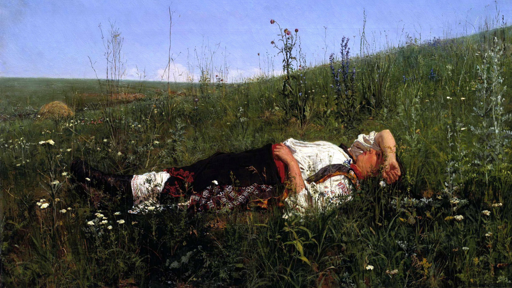

Николай Дмитриевич Кузнецов
В праздник, 1879

Государственная Третьяковская галерея, Москва
Кузнецов – типичный представитель среднего поколения передвижников. Живя на Украине, он ежегодно, начиная с 1881 года, представлял на выставки Товарищества передвижных художественных выставок свои жанровые произведения и портреты. Его метко схваченные сцены деревенского помещичьего быта, переданные подчас с юмором, но иногда и с известной долей негодования, разворачивались, как правило, на фоне поэтической украинской природы, снижающей обличительный характер изображенного действа. Многолюдные народные сцены у Кузнецова примыкали к традициям этнографического бытописания. При этом они были отмечены точностью жизненных наблюдений, полны тонкого лиризма. В них нашли отражение его впечатления от окружающей его жизни, любовь художника к своему краю. Открывает этот ряд произведений картина «В праздник», написанная Кузнецовым вскоре после его выхода в 1879 году из Императорской академии художеств и возвращения в родовое имение Степановка в Херсонской губернии. Мастер откровенно любуется девушкой в национальном праздничном наряде, лежащей навзничь в яркий солнечный день на лугу с высокой травой и полевыми цветами. Она полна очарования молодости. Её фигура в ослепительно белой вышитой сорочке, нарядной, украшенной орнаментом тёмной юбке и изящных сапожках как бы пронизана солнцем, воздухом, запахом трав. В картине разлито ощущение эпического спокойствия бескрайней степи, счастье и радость жизни. Редко в каком произведении русского искусства конца 1870-х годов мысль о единстве человека и природы, органичности существования людей в окружающем пейзаже была выражена с такой ясностью и так эмоционально. Картина «В праздник» была показана Кузнецовым на 9-ой выставке Товарищества в 1881 году. Она получила лестный отзыв Ивана Крамского и покорила зрителей непосредственностью чувств художника, нашедших мастерское воплощение в живописном строе полотна. После выставки картина была приобретена П.М. Третьяковым. Приезжая каждый год на Передвижную в Москву, Кузнецов был завсегдатаем в доме Павла Михайловича. Незаурядный исполнитель фортепьянных произведений, он принимал участие в музыкальных вечерах в доме Третьяковых. Общительный, остроумный человек, наделенный особым обаянием, он пользовался неизменной симпатией всех членов семьи собирателя.
Происхождение
- 1) Приобретено П.М. Третьяковым